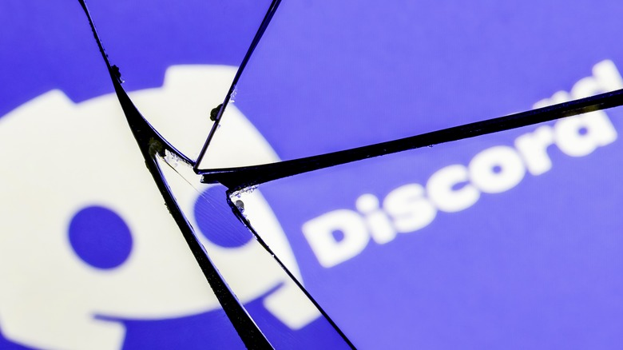
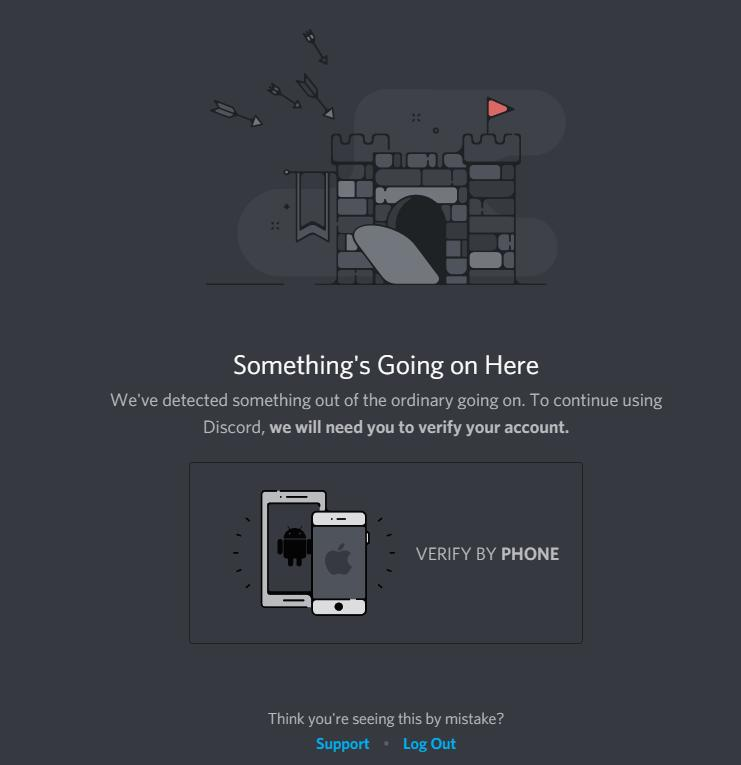

over the past decade (yes, it's really been that long!), discord's gotten pretty ubiquitous, so why don't i use it?
well...there's several reasons.
this is by far my biggest issue with using Discord. no, that doesn't mean your messages are visible to that totally real hacker on the Starbucks' Wi-Fi; sorry YouTube VPN sponsor segments, but Discord, like 99% of sites built in the last decade uses TLS to encrypt the data in transit. but once they arrive on Discord's servers, they are stored in literal plain text.
"okay, but who's going to bother reading your random DMs?"
good question...but it's not about the probability of a random Discord employee sifting through your DMs, it's more about the possibility. this shouldn't even be possible in the first place! nearly every other big messaging app in [insert current year] has end-to-end encryption: iMessage*, Google Messages, hell, even Facebook Messenger** has E2EE now.
*if you have iCloud backups on, it backs up the keys to Apple's servers, completely negating the encryption LOL
**that isn't me vouching for it, please god don't use the zucc's apps
with talks of going public and a change in leadership, Discord now more than ever has to generate revenue, a return on its investment. our "random user data" is extremely valuable to advertisers, if this weren't true then why else do you think companies like Google are so hungry for your data? do you really think Facebook spent $19 billion to acquire WhatsApp, then made it free out of the goodness of their hearts?
Discord have also proven in the past that they don't really, truly care about their users' privacy.
in 2023, Discord unveiled Clyde AI, powered by OpenAI...oh joy. it's since been killed off, but when it was a part of Discord, a user could add it to a server, DM or Group Chat, where it didn't need consent from any of the other members to read over previous messages, even from before it was added, and send that data to OpenAI. the user wasn't clearly told about any of these crucial details, unless they went hunting for a (now taken down) support article link. Clyde AI has since been removed, but this whole exercise just demonstrated their lack of care for user privacy.
there are more problems with DMs being stored in plain text.
even if Discord had the best intentions in the world (they absolutely do not), data breaches happen daily in the tech world. this is just an accident waiting to happen - Discord has already suffered a data breach, exposing almost a million users' IP addresses, though the plain-text DMs remain safe...for now..
consider this example: what if you are part of a vulnerable group, like a trans person in a country where being transgender is illegal?
it's not unheard of for government entities to make data requests to social platforms just like Discord. in cases like that, even if Discord had the best intentions, they can't exactly resist such demands without severe repercussions.
end-to-end encryption is basic confidentiality. why should we settle for any less when everyone else, even WhatsApp has end-to-end encryption - though it is very unsafe about metadata, so while they can't read what you're saying, they can see who you're talking to, for how long, where you were when talking to them, what your battery percentage was, and so on - see the end of this post for my actual recommendations for secure services.
this is my main reason for not using Discord, but that's far from the only problem with it.
this one's pretty simple, but pretty awful: if you decide that this isn't the platform for you, and you delete your account, nothing actually gets deleted. sure, your profile picture resets to the default, and your name becomes "Deleted User", but every message you ever sent remains in every single chat history, from DMs to servers from over the years, with no way to delete them outside of using scripts like Undiscord, which themselves are imperfect solutions due to breaking Discord's ToS, needing you to still have access to the server, group chat or DM you wish to delete messages from, and takes a very long time so as to not get your account banned.
even worse, if you get banned, you don't even have the chance to try to delete your messages, they're just stuck there. the only thing you can do is request all your data to be e-mailed to you. that's not much use.
if you're reading this blog post, you're no doubt a Discord user, so you don't need me to explain to you how much of Discord's features are locked behind their Nitro subscription. everything from animated profile pictures, to better quality screen sharing, to even just using a custom emoji anywhere outisde of the server of origin, is locked behind their $10 per month Nitro subscription.
and i get it, right? servers cost money, and with over 200 million monthly active users, Discord's bills aren't going to be cheap. but Discord shouldn't be expected to host the entire internet's conversations.
i believe that this is more of a systemic issue - Discord shouldn't be expected to house the entire world's gaming communities, from 1 on 1 DMs to forum-replacement Discord servers.
remember when we went to more than a small handful of huge sites during a day? there were smaller, but more circles.
instead of Reddit, we had forums that focused on certain topics, where specific people who were involved with the subject would register.
instead of YouTube, we had several different websites housing all different types of video.
instead of Discord, we had many IRC chat rooms with their own servers, rules and communities.
nowadays, with big social networks, and services like Discord, you have one central entity dictating the do's and don'ts for the whole world's conversations. and when Discord makes a controversial change, that suddenly is pressed onto all of its users. and if Discord goes down, that affects every single server, group chat and DM. and if your account gets banned, you're locked out of all of your friend groups, communities and so on, and if you're not careful, you may have also lost contacts who you only had on Discord.

for example, this screen can just show up at random, demanding you to hand over your phone number, and if you give them a phone number they don't like, or choose not to hand over your phone number, a piece of info that can be traced back to your real life identity, to a platform for online communications, no account for you. no warning, either.
glad you asked!
well...technically you didn't ask but WHATEVER you made it this far, it counts!one thing that keeps people on Discord is convenience, it is one app that does a lot of things, and i personally don't believe there is any one app that can act as a drop-in replacement for all of Discord's features. instead, i use a handful of apps:
and that's pretty much it! i use mumble for day-to-day lengthy voice chats, VDO.Ninja to screenshare to my friends, Element as a replacement for Discord servers, and Signal for private messages and groups!
all of these apps support encryption and are open-source software - so anyone can contribute to the code and help make things better for everyone!
all of these apps use fewer resources than Discord, offer safer, higher quality means of communication, and are created to genuinely be the best they can, instead of being profitable. i really suggest you give them a try!
if you want more control over your own conversations, Mumble, VDO.Ninja and Matrix (the server software Element uses) are all self-hostable, so you don't have to rely on servers that aren't your own if that's a concern to you!
well, thanks for reading this far, this is by far my longest post.
if you're overwhelmed by what i just threw at you, i can suggest starting by inviting a friend to Signal, so you can give quality alternatives a try, and have a backup to Discord for next time it goes down again...or once the inevitable enshittification gets too rough for your liking.
surfs up, see ya on the net !